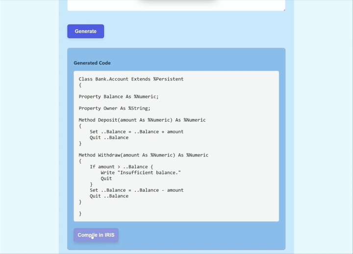
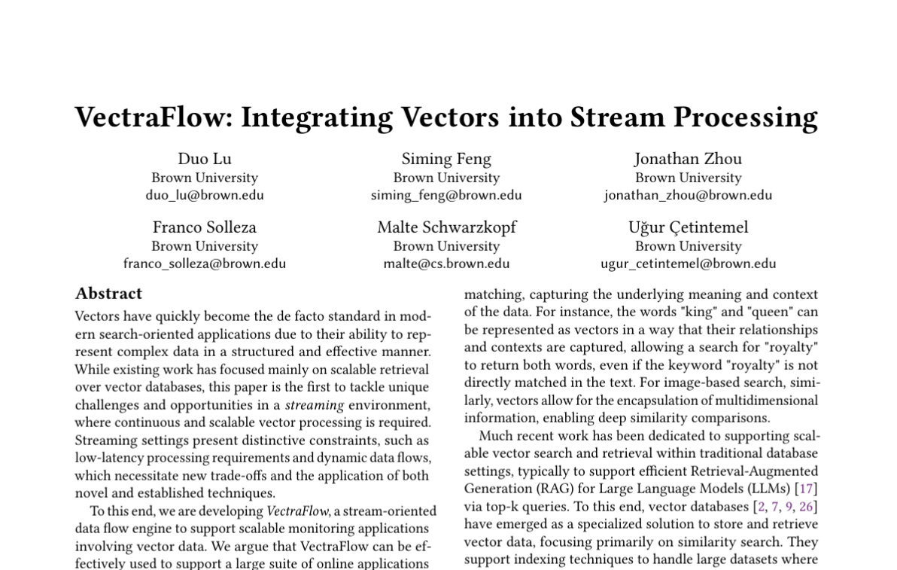
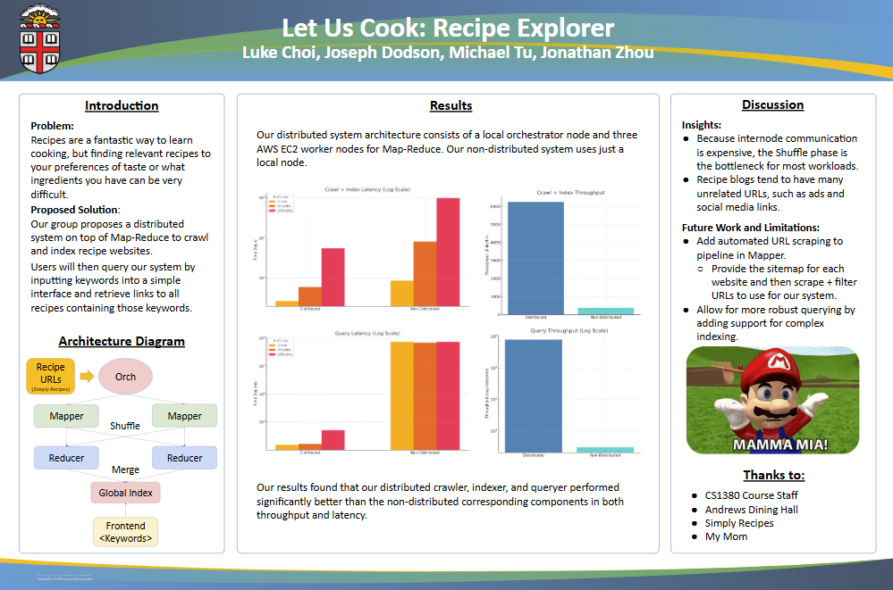
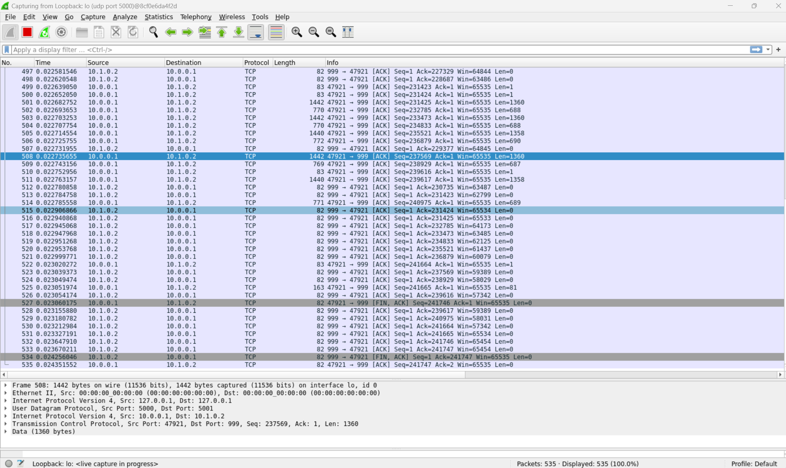
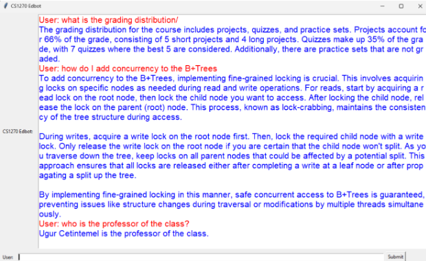
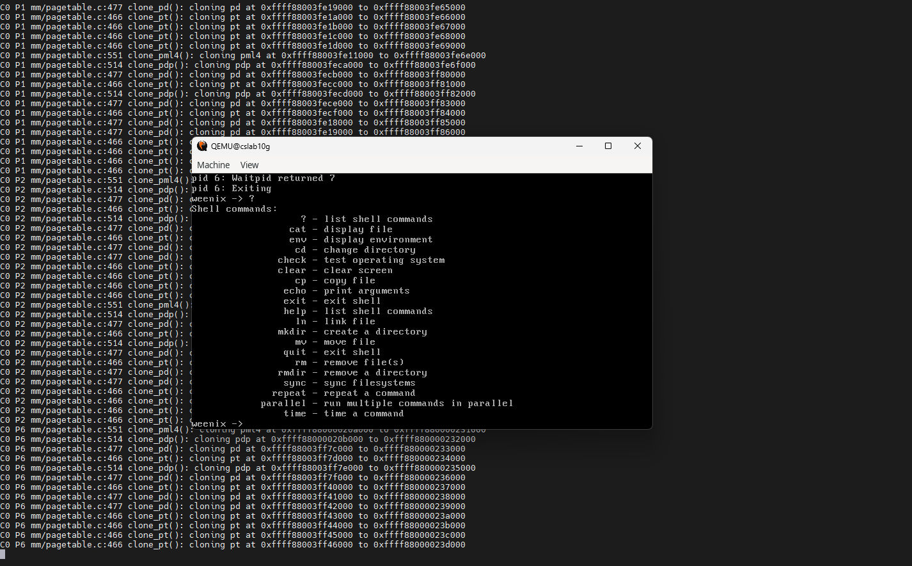
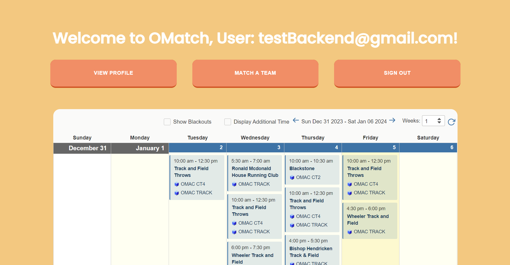
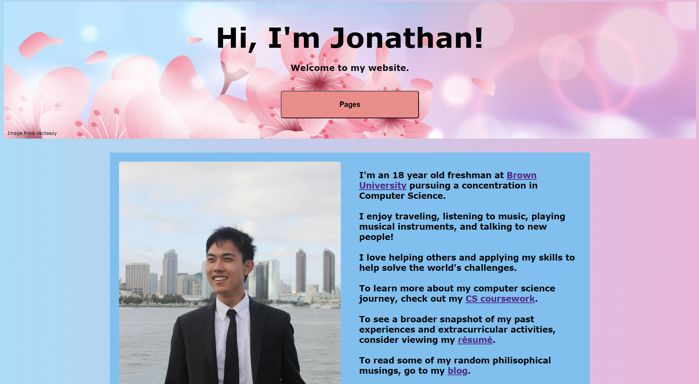
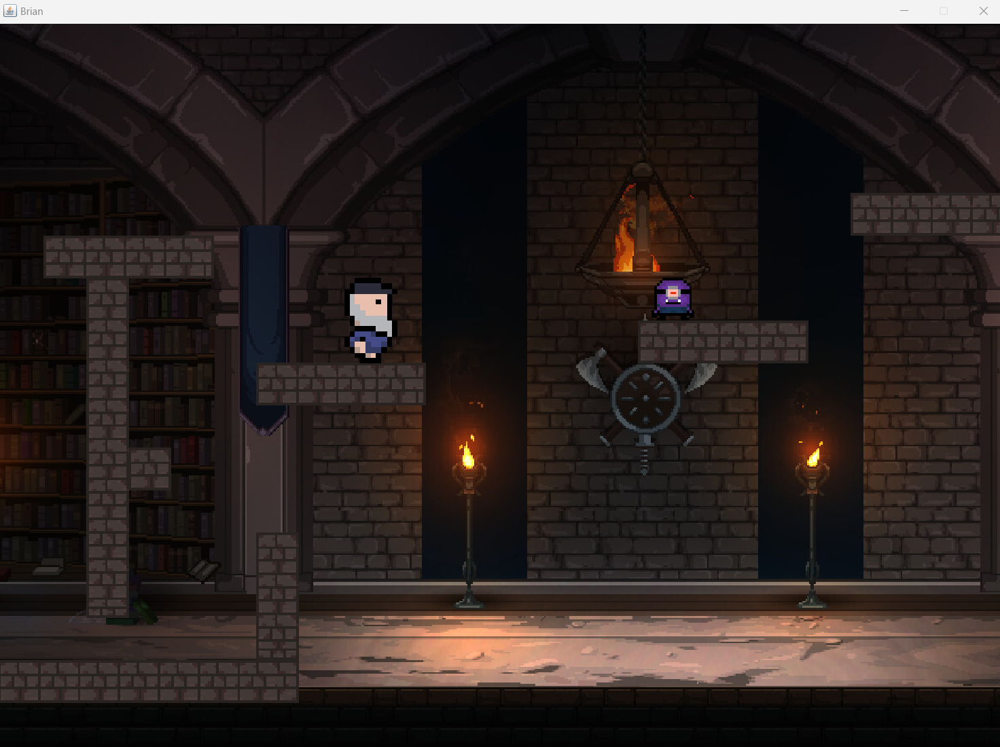

2025
ObjectScript Coder
Finetuned open source language models to be better at generating ObjectScript code. To this aim, I coded a data cleaning pipeline in Python to standardize style on .cls code files, finetuned the language models using SFT, quantization, and QLoRA, and evaluated the models with HumanEval and MBPP (ObjectScriptified).
 What is ObjectScript?2025
VectraFlow: Integrating Vectors into Stream Processing
Collaborated with the Database Group to design and implement a cutting edge stream-oriented data flow processing system for vectors. The system contains stream filtering, top-k, join operations, and alternative data representations through quantization.
 Research Paper2025
Let Us Cook: Recipe Explorer
Recipes are a fantastic way to learn how to cook, but finding relevant recipes to your preferences of taste or what ingredients you have can be very difficult. Our group proposes a distributed system solution hosted on AWS EC2 nodes that builds on top of our custom JavaScript Map-Reduce implementation to crawl and index recipe websites.
 GitHub Repository2024
VectraFlow: Binary Quantization
Researched quantization methods to optimize a stream processing system built to support scalable and low-latency monitoring over vector streams, targeting a large suite of applications such as continuous prompts, copyright infringement detection, and anomaly detection.
 Symposium Poster
Symposium Poster
2024
TCP/IP
Designed and programmed a virtual IP layer and RFC-compliant TCP implementation in Go.
 Assignment Specification2024
Auto Edstem
Developed a chatbot that uses Retrieval Augmented Generation (RAG) to automate and augment teaching assistant answers to student questions on Edstem.
 Project Writeup2024
Weenix Operating System
Coded the Weenix operating system’s UNIX kernel with processes, threads, synchronization primitives, device drivers, virtual file system, System 5 File System (S5FS), and virtual memory in C.
 Weenix Introduction2023
OMatch!
Worked together with a team of four programmers to develop a platform dedicated to creating fun and competitive 5 v 5 basketball games at the OMAC.
 GitHub Repo2022
Old-fashioned Floral-styled Website
Constructed an old-fashioned personal website with pure HTML/CSS.
 Link to Good Ol' Website2022
Brian : Video Game
Collaborated with graphic artists to create a platformer and 2D maze game in Java.
 GitHub Repo2021
Flowey Fight : AP Computer Science Principles Portfolio
Developed an Undertale battle in Python using Python Turtle!
GitHub Repo2021
Super Mario Bathroom Rush : Scratch
Created a Super Mario spinoff video game in Scratch for AP Computer Science Principles.
Note: For more complex projects, check out the Coursework tab!